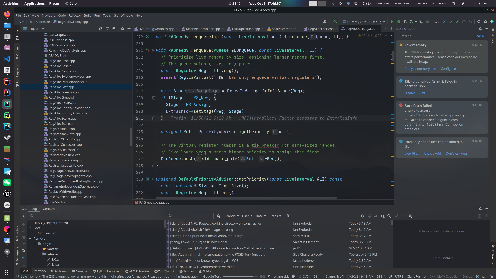
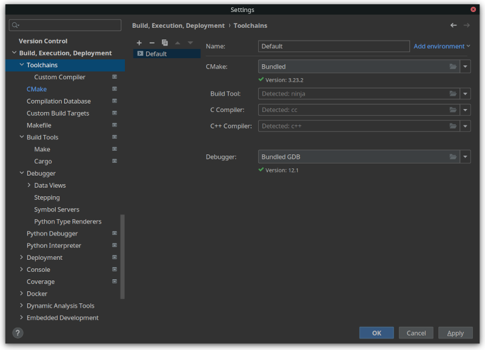
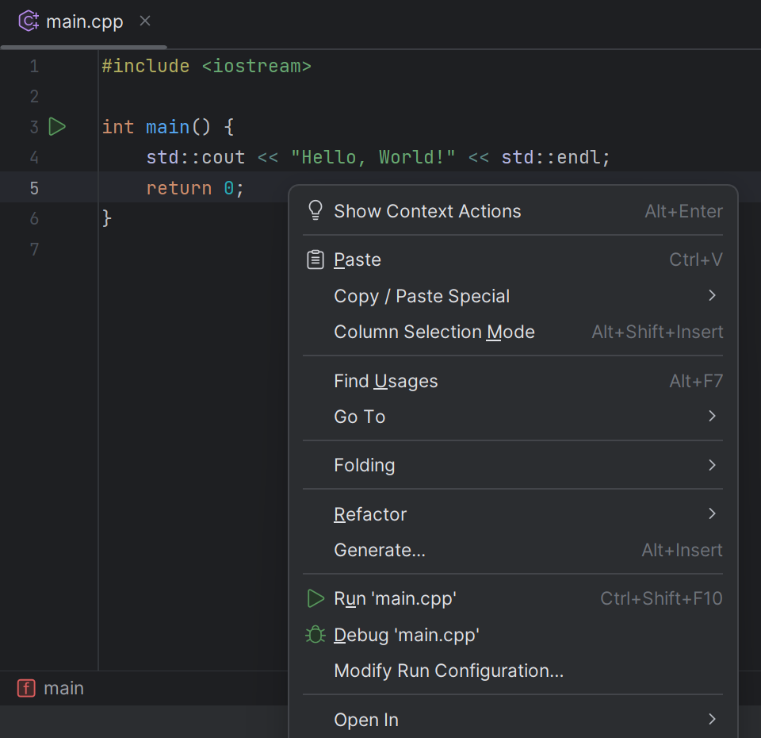
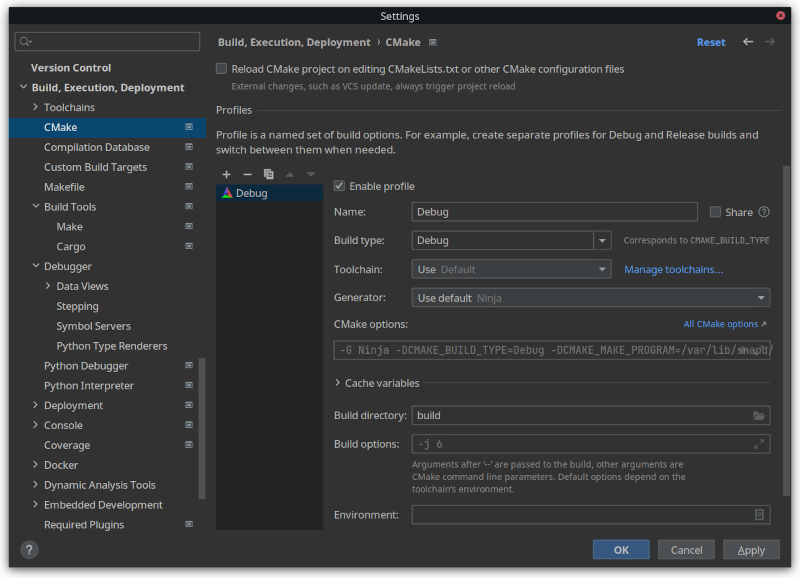
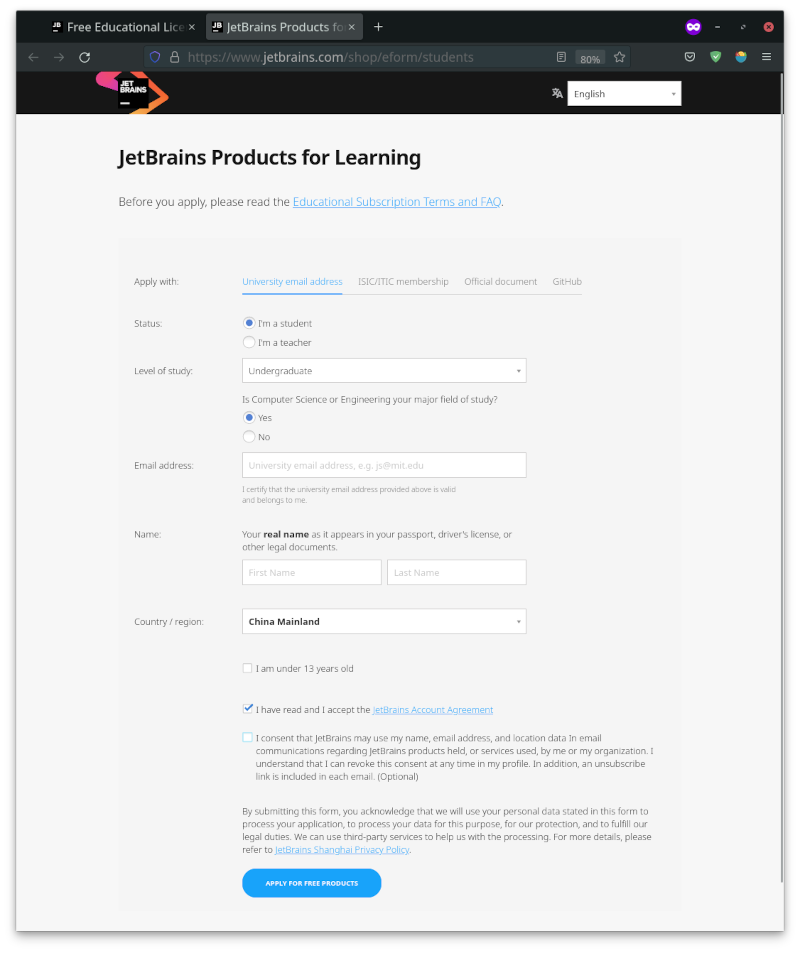
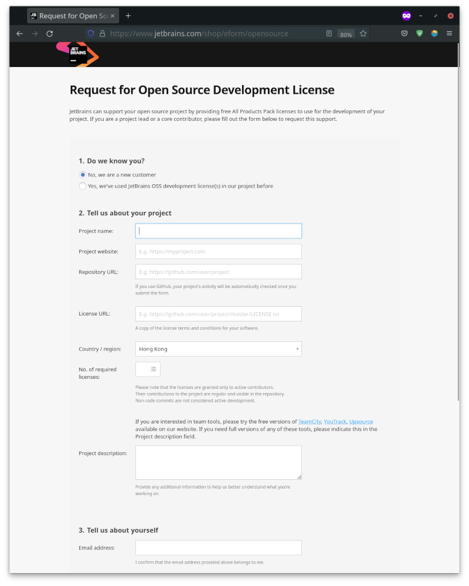

Clion
简介
CLion 是一款由 JetBrains 公司开发的功能丰富且强大的跨平台 C/C++ 集成开发环境（IDE）．

官方教程
在官方网站中给出了 学习 CLion 的教程．
安装
参见 Download CLion．
配置
工具链安装
CLion 默认不带编译器，构建工具和调试工具，需要手动进行安装．
Windows
参见 Tutorial: Configure CLion on Windows | CLion Documentation．
值得一提的是 CLion 的 Windows 版本中自带了 MinGW，所以可以不用额外安装 MinGW 工具链．
Linux
Debian/Ubuntu 及其衍生发行版
sudo apt install make cmake # build tools
sudo apt install gcc g++ gdb # compiler and debugger
sudo apt install clang clang++ llvm lldb # you can also choose to use clang toolchain
Arch Linux 及其衍生发行版
sudo pacman -S make cmake # build tools
sudo pacman -S gcc g++ gdb # compiler and debugger
sudo pacman -S clang clang++ llvm lldb # you can also choose to use clang toolchain
Fedora/RHEL/CentOS/Rocky Linux
sudo dnf install make cmake # build tools
sudo dnf install gcc g++ gdb # compiler and debugger
sudo dnf install clang clang++ llvm lldb # you can also choose to use clang toolchain
macOS
参见 Tutorial: Configure CLion on macOS | CLion Documentation．
工具链设置
手动设置工具链
新安装的 CLion 会自动检测系统中的 C/C++ 开发工具链，如果已安装的工具链无法自动检测到，可在 Settings 中找到 Build, Execution, Deployment>Toolchains 进行手动配置．

编译、运行和调试
虽然 CLion 诞生之初是面向多文件的复杂 C/C++ 项目诞生的，早些时候的 CLion 默认使用 CMake 作为构建工具，但是自 CLion 2022.3 版本起，CLion 已经支持 C, C++ 单文件运行．
有多种方式来运行一个 C++ 程序，一个简单的流程如下：
- 创建一个 C/C++ 项目：
New -> Project -> C++ Executable，选择合适的地址和语言标准版本，点击Create． - 打开项目，此时的项目目录下应当存在一个
cmake-build-debug目录、一个CMakeLists.txt文件和一个main.cpp文件．因为我们不需要使用 CMake 来管理项目，因此我们可以删去CMakeLists.txt文件和cmake-build-debug目录及其内所有文件． - 点击打开
main.cpp文件，并在编辑区右键单击，可以看到Run 'main.cpp'选项．选择此选项后，CLion 可以自动创建一个运行配置并运行程序．

如需调试程序，可以编辑区打好断点，在编辑区右键单击，选择 Debug 'main.cpp' 选项．
通过 CMake 编译、运行和调试
设置
CLion 也可使用 CMake 作为构建工具，关于 CMake 的设置可以在 Build, Execution, Deployment -> Toolchains -> CMake 中修改．

编译选项
CMake 默认使用项目根目录下的 CMakeList.txt 作为构建项目的配置文件，可以使用 add_compile_options 命令来增加编译选项，例如：
add_compile_options(-std=c++17 -DDEBUG)
其他 CMake 的功能请参考 CMake 官方文档．
免费获取 CLion IDE 许可证
CLion 为付费产品，但是可以通过教育邮箱或开源项目申请特殊许可证．申请之后不仅可以免费使用正版 CLion IDE，还可以免费使用 JetBrains 公司开发的其他付费产品．
???+ note "Note" 自 2025 年 5 月起，CLion 对非商业用途免费．
根据 Toolbox 非商业用途订阅协议中的定义，商业产品是指有偿分发或提供或者作为您的商业活动的一部分使用的产品．但某些类别被明确排除在这一定义之外．常见的非商业用例包括学习和自我教育、任何形式的内容创作、开源代码和业余爱好开发．
使用教育邮箱获取
进入官网的 Free Educational Licenses 页面, 点击 Apply 按钮，填写相关信息即可申请．

注意：在注册时于邮箱选项请填如 @edu.cn 后缀的教育邮箱，特殊许可证需要邮箱验证后方可拿到．
你可以到所在高校的教务中心官网去申请教育邮箱，如果申请不到需要使用 学信网 进行认证（仅中国大陆）．
使用开源项目获取
如果您是某个开源项目的核心开发者或维护者之一，您可以尝试申请开源开发许可证 (Open Source Development License). 申请流程与教育许可证类似，但需要填写开源项目的仓库地址．
